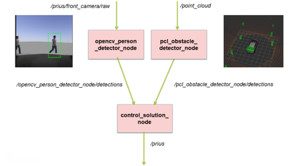
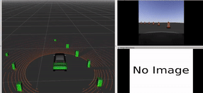

Pathfinder Prius:
Navigating the Future with ROS-Powered Autonomous Driving
In this university assignment, I developed software for autonomous driving of a Prius vehicle in a simulated test track utilizing the Robot Operating System (ROS). The Prius was equipped with two primary sensors, a front-facing camera located behind the windshield and a 360-degree top-mounted LIDAR sensor. The vehicle's system received the camera images and LIDAR point clouds as ROS topics.
The objective of this study was to design a virtual, controllable Prius vehicle that could detect obstacles and pedestrians using its sensors, and subsequently maneuver autonomously along a path defined by cones, avoiding all obstacles. Additionally, the vehicle was required to stop in the presence of pedestrians.
For this study, the university supplied a simulation platform comprised of a virtual vehicle and environment. To accomplish the autonomous driving task, we implemented three additional ROS packages as the solution.
- As part of the solution, we created an "opencv_person_detector" package that contained a node capable of detecting 2D bounding boxes around all individuals in a camera image through the use of OpenCV.
- Additionally, we developed a "pcl_obstacle_detector" package that included a node for detecting 3D bounding boxes around all barrels present in the LIDAR point cloud through the use of Point Cloud Library (PCL).
- Finally, we created a "control_barrel_world" package that comprised a node responsible for controlling the vehicle. This node subscribed to both the 3D barrel detections and 2D person detections, and published control messages to drive the vehicle.
The accompanying illustration showcases the topics and nodes incorporated in the solution.
The source code for this project must be kept confidential. A recording of the functioning simulation after the implementation of the solution is provided below, albeit with some lag in the display due to the GIF format.
